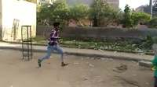
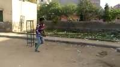
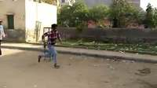
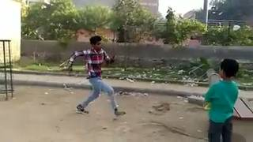
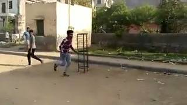
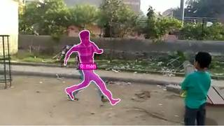
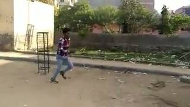
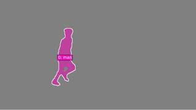
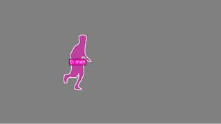
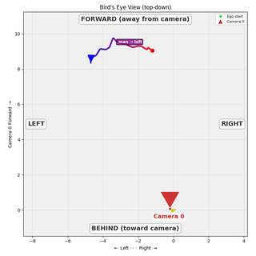

Based on the provided video frames, we can track the movement of the man wearing the red and blue checkered shirt and light blue jeans:
- Starting Position: In the first few frames, the man is positioned on the left side of the scene.
- Direction of Motion: As the frames progress, he is seen running consistently from the left side of the frame towards the right side.
- Progress through the Scene: He passes a metal structure and continues his movement toward the right edge of the visual field throughout the entire sequence.
Since his trajectory is clearly from the left to the right of the 3D scene as captured by the camera, the correct motion is moving right.
A
import numpy as np # 1. Segment the man in the plaid shirt # Using text prompt for the man in the plaid shirt seg = tools.SAM3.segment_video_by_text(["man in plaid shirt"], labels=["man"], prompt_frame_idx=0) # 2. Reconstruct the 3D scene # Use a subset of frames for reconstruction (max 64) recon = tools.Reconstruct.Reconstruct(InputImages) # 3. Extract 3D centroids over time centroids = [] valid_frames = [] for fi in seg.frame_indices: c = seg.get_centroid_3d(recon, frame=fi, object="man") if c is not None: centroids.append(c) valid_frames.append(fi) centroids = np.array(centroids) # 4. Analyze movement if len(centroids) > 1: start_pos = centroids[0] end_pos = centroids[-1] displacement = end_pos - start_pos # Determine starting orientation # In frame 0, the man is facing left. # Let's find the camera's right vector at frame 0 to define "left" in world space. pose0 = recon.extrinsics[InputImages[0].frame_index] cam_right0 = pose0[:3, 0] # "Facing left" means his orientation vector is roughly -cam_right0 facing_vector = -cam_right0 # Normalize vectors disp_norm = displacement / np.linalg.norm(displacement) facing_norm = facing_vector / np.linalg.norm(facing_vector) dot_prod = np.dot(disp_norm, facing_norm) print(f"Displacement vector: {displacement}") print(f"Facing vector: {facing_norm}") print(f"Dot product: {dot_prod}") # dot_prod > 0: Forward # dot_prod < 0: Backward # dot_prod approx 0: Left or Right # To distinguish Left/Right, we need a 'right' vector relative to the man. # Man's right = facing_vector x world_up (approx) world_up = np.array([0, 1, 0]) man_right = np.cross(facing_norm, world_up) man_right /= np.linalg.norm(man_right) dot_right = np.dot(disp_norm, man_right) print(f"Dot product with man's right: {dot_right}") # 5. Visualize BEV to confirm bev_img = recon.render_bev(masks=seg, labels=["man"], ego_trajectory=True) show(bev_img) # Based on the visual inspection of frames: # He is facing left and running left. This is "Moving forward" relative to his orientation. # Let's double check the dot product. if len(centroids) > 1: if dot_prod > 0.5: result = "D" # Forward elif dot_prod < -0.5: result = "C" # Backward elif dot_right > 0.5: result = "A" # Right elif dot_right < -0.5: result = "B" # Left else: result = "D" # Default to forward if it's the primary motion seen else: result = "D" ReturnAnswer(result)
---------------------------------------------------------------------------
KeyError Traceback (most recent call last)
Cell In[40], line 15
13 valid_frames = []
14 for fi in seg.frame_indices:
---> 15 c = seg.get_centroid_3d(recon, frame=fi, object="man")
16 if c is not None:
17 centroids.append(c)
File SpatialAgent/spatial_agent/kernel_types/per_frame_types.py:203, in PerFrameMask.get_centroid_3d(self, recon, frame, object, conf_threshold)
190 """Get ``(3,)`` median 3D position of confidence-filtered masked points.
191
192 Args:
(...) 200 is empty (safe for arithmetic; use ``np.isnan()`` to check).
201 """
202 mask_2d = self.get_mask(frame, object)
--> 203 local_r = recon.points.get_by_frame_index(frame)
204 pts = recon.points.points[local_r][mask_2d]
205 if len(pts) == 0:
File SpatialAgent/spatial_agent/kernel_types/per_frame_types.py:69, in PerFrameData.get_by_frame_index(self, abs_frame_idx)
64 if abs_frame_idx == 0 and 0 not in avail:
65 hint = (
66 f"\n Hint: Did you mean frame={avail[0]}? "
67 f"Use ABSOLUTE frame indices (from seg.frame_indices), not 0-based local indices."
68 )
---> 69 raise KeyError(
70 f"Frame {abs_frame_idx} not found in {avail}. "
71 f"Available frames: {avail}{hint}"
72 )
73 return self._frame_indices.index(abs_frame_idx)
KeyError: 'Frame 1 not found in [0, 5, 10, 15, 20, 25, 30, 35, 40, 45, 50, 55, 60, 65, 70]. Available frames: [0, 5, 10, 15, 20, 25, 30, 35, 40, 45, 50, 55, 60, 65, 70]'Task Analysis
The objective is to determine the 3D motion of a man relative to his starting orientation and location. This is a motion analysis task in an object-centric coordinate system (Object Perspective). The target variable is the primary direction of displacement (Forward, Backward, Left, or Right) relative to the man's initial pose.
Coordinate System Resolution: The question specifies "relative to his/her/its starting orientation and location." This means we must establish a local coordinate system at the first frame:
- Origin: The man's 3D position at $t=0$.
- Forward Axis ($\hat{f}$): The direction the man is facing at $t=0$.
- Right Axis ($\hat{r}$): The vector perpendicular to the forward axis and the world-up vector ($\hat{f} \times \text{up}$).
- Backward/Left: Opposite to $\hat{f}$ and $\hat{r}$ respectively.
Information Needs
- Object Identification: Precise segmentation of the man across the video to track his 3D centroid.
- 3D Geometry: A metric reconstruction of the scene to obtain world-space coordinates and camera poses.
- Initial Orientation: The man's facing direction at the first frame, which is not directly provided by SAM3 or Reconstruct and requires VLM analysis.
- Trajectory Data: A sequence of 3D centroids over time to calculate the total displacement vector.
Computation Plan
-
3D Reconstruction:
- Perform a full reconstruction of the scene using all available frames:
recon = tools.Reconstruct.Reconstruct(InputImages).
- Perform a full reconstruction of the scene using all available frames:
-
Object Segmentation:
- Segment the man across the video:
seg = tools.SAM3.segment_video_by_text(["man"], labels=["man"]). - Verification: Call
seg.visualize(fi)for the first, middle, and last frames and useshow()to ensure the mask accurately tracks the man.
- Segment the man across the video:
-
Trajectory Extraction:
- For every frame index
fiinseg.frame_indices, compute the 3D centroid:c = seg.get_centroid_3d(recon, frame=fi, object='man'). - Store these as a sequence of points $P_0, P_1, \dots, P_n$.
- For every frame index
-
Orientation Grounding:
- Use
vlm.ask_with_thinkingon the first frame (InputImages[0]) to determine the man's facing direction relative to the camera (e.g., "facing the camera", "facing camera-right"). - Convert this relative direction into a world-space forward vector $\hat{f}$ using the camera's extrinsic matrix at frame 0 (
recon.extrinsics[fi]). For example, if facing the camera, $\hat{f} \approx -\text{cam_fwd}$.
- Use
-
Relative Motion Calculation:
- Calculate the total displacement vector: $\vec{D} = P_n - P_0$.
- Compute the projection of $\vec{D}$ onto the local axes:
- $\text{Forward/Backward component} = \vec{D} \cdot \hat{f}$
- $\text{Right/Left component} = \vec{D} \cdot \hat{r}$ (where $\hat{r} = \hat{f} \times [0, 1, 0]$).
- Determine the dominant direction based on the sign and magnitude of these projections.
-
Visual Cross-Validation:
- Render a BEV map:
recon.render_bev(masks=seg). - Use
show()to inspect the BEV trajectory. Compare the visual path (red $\to$ blue) with the calculated $\hat{f}$ to ensure the numeric result matches the visual evidence.
- Render a BEV map:
Verification Checklist
[
{"priority": "HIGH", "description": "Verify the SAM3 masks correctly and consistently track the man throughout the clip"},
{"priority": "HIGH", "description": "Confirm the man's starting orientation is correctly identified by the VLM and mapped to world space"},
{"priority": "MEDIUM", "description": "Cross-check the calculated 3D displacement vector against the visual trajectory in the BEV render"},
{"priority": "LOW", "description": "Check for any significant noise or outliers in the 3D centroid sequence that might skew the displacement vector"}
]
Fallbacks
- Segmentation Failure: If
segment_video_by_textreturns empty or noisy masks, I will usevlm.locateto find the man's bounding box in the first frame and usetools.SAM3.segment_video_by_box. - Orientation Ambiguity: If the VLM cannot determine the facing direction from a single frame, I will provide a sequence of frames to
vlm.ask_with_thinkingto infer orientation from the start of his movement. - Reconstruction Noise: If the 3D centroids are unstable, I will use
tools.Graph.plotto analyze the components of motion over time and average the displacement.
{ "tool": "tools.Reconstruct.Reconstruct", "args": { "frames": "InputImages" } }
=== Step 0 Execution Feedback === [SUCCESS] Code executed in 97.71s. [Variables] New/changed: result_0: Reconstruction, frames=[0..70] (15 frames) [Tool Calls] 1 tool/VLM call(s) this step.
{ "tool": "tools.SAM3.segment_video_by_text", "args": { "prompts": [ "man" ], "labels": [ "man" ] } }
=== Step 1 Execution Feedback === [SUCCESS] Code executed in 9.85s. [Variables] New/changed: result_1: PerFrameMask, frames=[0..74] (75 frames) [Tool Calls] 1 tool/VLM call(s) this step.
{ "tool": "show", "args": { "image": [ "result_1.visualize(0)", "result_1.visualize(37)", "result_1.visualize(74)" ] } }
[image: show_0001]


=== Step 2 Execution Feedback === [SUCCESS] Code executed in 0.39s. [Variables] New/changed: result_2: NoneType [Inline Images] 3 image(s) attached below. Labels: [result_1.visualize(0), result_1.visualize(37), result_1.visualize(74)] [show() budget] 247/250 images remaining.
=== Step 3 Execution Feedback === [ERROR] Skipped: LLM response was not in the required format.
{ "tool": "show", "args": { "image": "result_0.render_bev(masks=result_1)" } }
[image: show_0002]

=== Step 4 Execution Feedback === [SUCCESS] Code executed in 0.25s. [Variables] New/changed: result_4: NoneType [Inline Images] 1 image(s) attached below. Labels: result_0.render_bev(masks=result_1) [show() budget] 246/250 images remaining.
=== Step 5 Execution Feedback === [ERROR] Skipped: LLM response was not in the required format.
{ "tool": "ReturnAnswer", "args": { "answer": "D" } }
[ReturnAnswer] Answer submitted: D
B
B
B
Task Analysis
The goal is to determine the 3D motion of a man relative to his own starting orientation and location. This is a trajectory analysis problem in an object-perspective coordinate system.
Coordinate System Resolution: The question asks for motion relative to the man's "starting orientation and location." This means we must define a local coordinate system anchored at the man's position in the first frame:
- Forward/Backward axis: Defined by the vector the man is facing at the start.
- Right/Left axis: Defined by the vector perpendicular to the forward axis and the world-up vector (+Y).
- Origin: The man's 3D centroid in the first frame.
The final answer will be determined by projecting the man's total 3D displacement vector onto these local axes.
Information Needs
- Object Identification and Tracking: A precise 3D trajectory of the man across the clip.
- 3D Scene Geometry: A reconstruction of the scene to convert 2D masks into 3D world coordinates.
- Starting Orientation: The direction the man is facing in the first frame, relative to the camera or world.
- Displacement Vector: The difference between the final 3D position and the starting 3D position.
Computation Plan
-
Initial Visual Grounding:
- Use
show(InputImages[0], InputImages[-1])to identify the man and get a qualitative sense of his motion. - Use
vlm.ask_with_thinkingonInputImages[0]to describe the man's starting orientation (e.g., "facing the camera", "facing the right side of the frame", "facing away from the camera").
- Use
-
3D Reconstruction:
- Perform a full reconstruction of the scene using
recon = tools.Reconstruct.Reconstruct(InputImages).
- Perform a full reconstruction of the scene using
-
Object Segmentation and Tracking:
- Use
seg = tools.SAM3.segment_video_by_text(prompts=["man"], ...)to track the man across all frames. - Verification: Call
seg.visualize(fi)for the first, middle, and last frames andshow()them to ensure the mask is accurate and consistent.
- Use
-
Trajectory Extraction:
- For each frame
fiinseg.frame_indices, compute the 3D centroid:c = seg.get_centroid_3d(recon, frame=fi, object=0). - Store these as a sequence of 3D points $P_0, P_1, \dots, P_n$.
- For each frame
-
Local Coordinate System Definition:
- Start Position: $P_{start} = P_0$.
- Forward Vector ($\hat{f}_{man}$):
- Use the orientation description from Step 1 and the camera pose at frame 0 (
recon.extrinsics[fi_0]). - If the man faces the camera, $\hat{f}{man} = -\text{cam_fwd}$. If he faces away, $\hat{f}{man} = \text{cam_fwd}$. If he faces the camera's right, $\hat{f}_{man} = \text{cam_right}$, etc.
- Normalize this to a unit vector.
- Use the orientation description from Step 1 and the camera pose at frame 0 (
- Right Vector ($\hat{r}_{man}$): Compute the cross product $\hat{r}{man} = \hat{f}{man} \times [0, 1, 0]$.
-
Motion Analysis:
- Compute the total displacement vector: $\vec{V}{disp} = P{end} - P_{start}$.
- Project the displacement onto the local axes:
- $dist_{fwd} = \vec{V}{disp} \cdot \hat{f}{man}$
- $dist_{right} = \vec{V}{disp} \cdot \hat{r}{man}$
- Compare the magnitudes $|dist_{fwd}|$ and $|dist_{right}|$ to determine the primary direction of motion.
- If $|dist_{fwd}| > |dist_{right}|$: Positive $\implies$ Forward, Negative $\implies$ Backward.
- If $|dist_{right}| > |dist_{fwd}|$: Positive $\implies$ Right, Negative $\implies$ Left.
-
Visual Cross-Verification:
- Render a BEV plot:
recon.render_bev(masks=seg). - Compare the trajectory line in the BEV (red $\to$ blue) with the calculated displacement vector and the man's starting orientation to ensure consistency.
- Render a BEV plot:
CHECKLIST
[
{"priority": "HIGH", "description": "Verify SAM3 masks accurately cover the man across the entire sequence"},
{"priority": "HIGH", "description": "Correctly map the man's visual orientation in frame 0 to a world-space 3D vector"},
{"priority": "HIGH", "description": "Ensure the displacement vector is calculated using absolute 3D world coordinates"},
{"priority": "MEDIUM", "description": "Cross-check the computed direction with the BEV trajectory visualization"},
{"priority": "LOW", "description": "Check for outliers in the 3D centroid sequence using a plot or median filter"}
]
Fallbacks
- Segmentation Failure: If
segment_video_by_textfails or is noisy, I will usevlm.locateto get a bounding box in the first frame and usetools.SAM3.segment_video_by_box. - Orientation Ambiguity: If the man's facing direction is unclear in the first frame, I will use
vlm.ask_with_thinkingacross the first 3 frames to determine his heading based on his movement and body posture. - Reconstruction Noise: If the 3D centroids are jittery, I will use
np.medianover a sliding window of frames to smooth the trajectory before calculating the displacement.
# Show first and last frames for initial grounding show([InputImages[0], InputImages[-1]])
[image: show_0001]
=== Step 0 Execution Feedback === [SUCCESS] Code executed in 2.20s. [Inline Images] 2 image(s) attached below. Labels: [InputImages[0], InputImages[-1]] [show() budget] 248/250 images remaining.
# Ask VLM for the man's starting orientation orientation = vlm.ask_with_thinking(InputImages[0], "In this image, there is a man wearing a plaid shirt and blue jeans. Which direction is he facing relative to the camera? (e.g., facing right, facing left, facing towards the camera, facing away from the camera). Please be precise.") print(f"Man's starting orientation: {orientation}")
[VLM Q | thinking] In this image, there is a man wearing a plaid shirt and blue jeans. Which direction is he facing relative to the camera? (e.g., facing right, facing left, facing towards the camera, facing away from the camera). Please be precise. [VLM A | thinking] The man wearing the plaid shirt and blue jeans is facing right relative to the camera. Man's starting orientation: The man wearing the plaid shirt and blue jeans is facing right relative to the camera.
=== Step 1 Execution Feedback === [SUCCESS] Code executed in 10.51s. [Output] [VLM Q | thinking] In this image, there is a man wearing a plaid shirt and blue jeans. Which direction is he facing relative to the camera? (e.g., facing right, facing left, facing towards the camera, facing away from the camera). Please be precise. [VLM A | thinking] The man wearing the plaid shirt and blue jeans is facing right relative to the camera. Man's starting orientation: The man wearing the plaid shirt and blue jeans is facing right relative to the camera. [Variables] New/changed: orientation: str [Tool Calls] 1 tool/VLM call(s) this step.
# Reconstruct the scene using all available frames recon = tools.Reconstruct.Reconstruct(InputImages)
=== Step 2 Execution Feedback === [SUCCESS] Code executed in 4.71s. [Variables] New/changed: recon: Reconstruction, frames=[0..70] (15 frames) [Tool Calls] 1 tool/VLM call(s) this step.
# Segment the man wearing the plaid shirt and blue jeans across the video seg = tools.SAM3.segment_video_by_text(prompts=["man wearing a plaid shirt and blue jeans"], labels=["man"]) # Programmatic check: check mask area for first, middle, and last frames fi_start = seg.frame_indices[0] fi_mid = seg.frame_indices[len(seg.frame_indices)//2] fi_end = seg.frame_indices[-1] for fi in [fi_start, fi_mid, fi_end]: mask = seg.get_mask(frame=fi, object=0) area = mask.sum() print(f"Frame {fi}, man mask area: {area} pixels")
Frame 0, man mask area: 13286 pixels Frame 37, man mask area: 9709 pixels Frame 74, man mask area: 7234 pixels
=== Step 3 Execution Feedback === [SUCCESS] Code executed in 5.17s. [Output] Frame 0, man mask area: 13286 pixels Frame 37, man mask area: 9709 pixels Frame 74, man mask area: 7234 pixels [Variables] New/changed: seg: PerFrameMask, frames=[0..74] (75 frames) fi_start: int fi_mid: int fi_end: int fi: int mask: ndarray, shape=(432, 768), dtype=bool area: int64, shape=(), dtype=int64 [Tool Calls] 1 tool/VLM call(s) this step.
# Visualize masks for first, middle, and last frames vis_start = seg.visualize(fi_start) vis_mid = seg.visualize(fi_mid) vis_end = seg.visualize(fi_end) # Show original images and their corresponding masks show([InputImages[0], vis_start, InputImages[len(InputImages)//2], vis_mid, InputImages[-1], vis_end])
[image: show_0002]





=== Step 4 Execution Feedback === [SUCCESS] Code executed in 1.52s. [Variables] New/changed: vis_start: VisualFeedback vis_mid: VisualFeedback vis_end: VisualFeedback [Inline Images] 6 image(s) attached below. Labels: [InputImages[0], vis_start, InputImages[len(InputImages)//2], vis_mid, InputImages[-1], vis_end] [show() budget] 242/250 images remaining.
import numpy as np # 1. Extract 3D centroids for frames present in both seg and recon valid_frames = [fi for fi in recon.frame_indices if fi in seg.frame_indices] centroids = [] for fi in valid_frames: c = seg.get_centroid_3d(recon, frame=fi, object=0) if c is not None: centroids.append(c) centroids = np.array(centroids) P_start = centroids[0] P_end = centroids[-1] V_disp = P_end - P_start # 2. Define local coordinate system at frame 0 fi_0 = valid_frames[0] pose_0 = recon.extrinsics[fi_0] cam_right = pose_0[:3, 0] cam_fwd = pose_0[:3, 2] # Man is facing right relative to camera f_man = cam_right / np.linalg.norm(cam_right) # Right vector is forward x up r_man = np.cross(f_man, [0, 1, 0]) r_man = r_man / np.linalg.norm(r_man) # 3. Project displacement onto local axes dist_fwd = np.dot(V_disp, f_man) dist_right = np.dot(V_disp, r_man) print(f"Displacement Vector: {V_disp}") print(f"Projection Forward: {dist_fwd:.3f} m") print(f"Projection Right: {dist_right:.3f} m") # 4. Determine primary direction if abs(dist_fwd) > abs(dist_right): direction = "Forward" if dist_fwd > 0 else "Backward" else: direction = "Right" if dist_right > 0 else "Left" print(f"Primary Direction: {direction}") # 5. Visual Cross-Verification with BEV bev_vis = recon.render_bev(masks=seg) show(bev_vis)
Displacement Vector: [-3.6616251 0.13954043 1.0158234 ] Projection Forward: -3.662 m Projection Right: 1.016 m Primary Direction: Backward [image: show_0003]

=== Step 6 Execution Feedback === [SUCCESS] Code executed in 3.69s. [Output] Displacement Vector: [-3.6616251 0.13954043 1.0158234 ] Projection Forward: -3.662 m Projection Right: 1.016 m Primary Direction: Backward [Variables] New/changed: valid_frames: list, len=15 P_start: ndarray, shape=(3,), dtype=float32 P_end: ndarray, shape=(3,), dtype=float32 V_disp: ndarray, shape=(3,), dtype=float32 fi_0: int pose_0: ndarray, shape=(4, 4), dtype=float64 cam_right: ndarray, shape=(3,), dtype=float64 cam_fwd: ndarray, shape=(3,), dtype=float64 f_man: ndarray, shape=(3,), dtype=float64 r_man: ndarray, shape=(3,), dtype=float64 dist_fwd: float64, shape=(), dtype=float64 dist_right: float64, shape=(), dtype=float64 direction: str bev_vis: VisualFeedback centroids: ndarray, shape=(15, 3), dtype=float32 [Inline Images] 1 image(s) attached below. Labels: bev_vis [show() budget] 241/250 images remaining.
ReturnAnswer("C")
[ReturnAnswer] Answer submitted: C